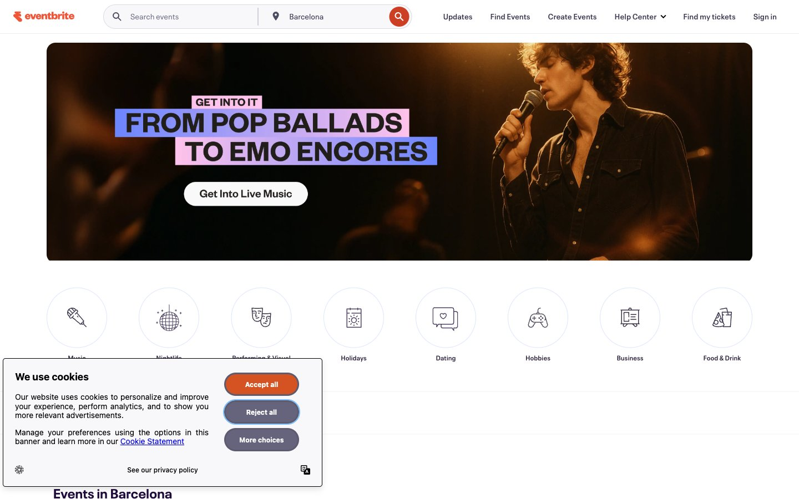

Eventbrite 的 Design.md 主题展示，围绕媒体内容、浅色界面、AI、消费品牌组织页面。
Explore Eventbrite's light Media design system: Canvas White #ffffff, Porcelain Mist #f8f7fa colors, Neue Plak, Neue Plak Text typography, and DESIGN.md for...

#f8f7fa: #f8f7fa#39364f: #39364f#ffffff: #ffffff#3659e3: #3659e3#dbdae3: #dbdae3#1e0a3c: #1e0a3c#bec0c6: #bec0c6#000000: #000000#eeedf2: #eeedf2#585163: #585163#dee5ff: #dee5ff#d2d4d6: #d2d4d6fontFamily: [object Object]fontSize: [object Object]lineHeight: [object Object]letterSpacing: [object Object]control: 8pxcard: 8pxpreview: 8pxcategoryIconCircle: 50%mobileGutter: 16pxouterGutter: 24px